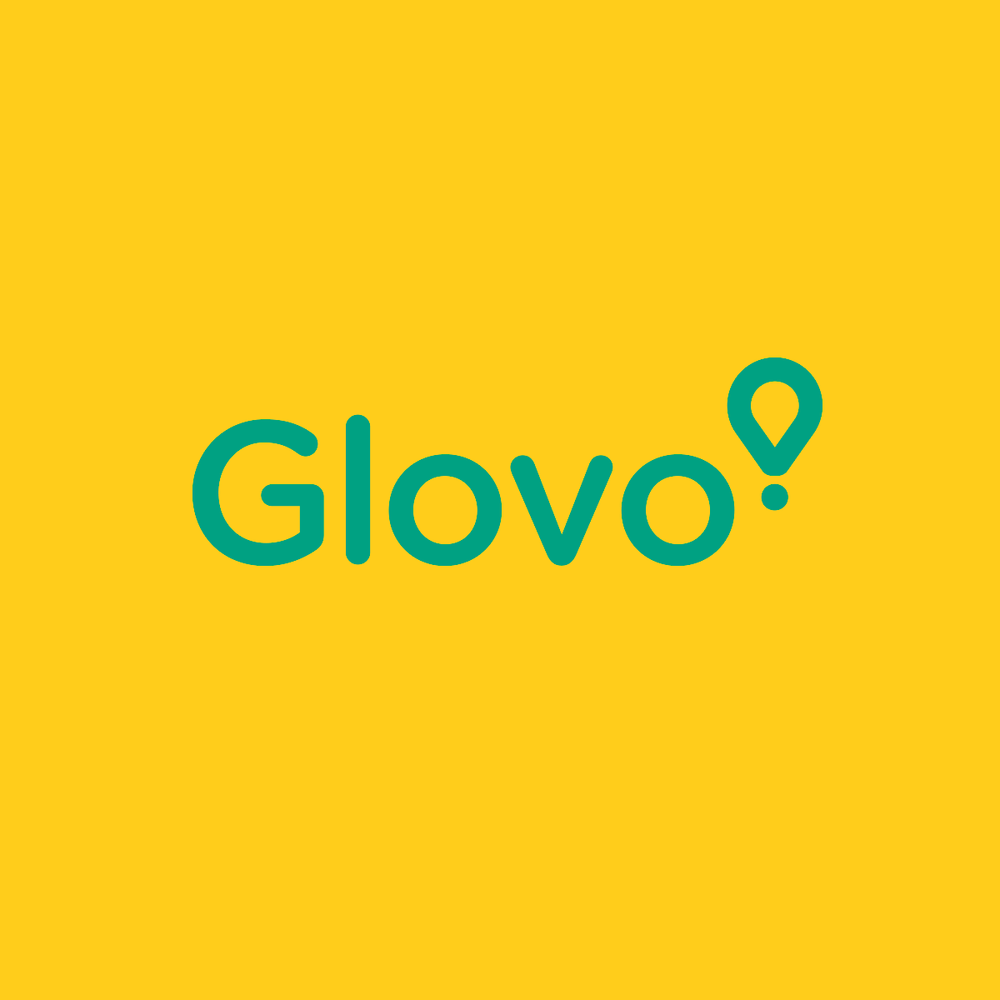

COMPETITION


Going to a restaurant is a willing decision, although sometimes we’re in a hurry and we just want to stop by for a quick refuel. And in the same way, ordering takeout can waste precious minutes and attention time, distracting people from work and interrupting their flow. What’s more, it can be even more bothersome when the end result is unsatisfactory and we notice that what we ordered doesn’t meet our expectations, or it doesn’t excite us in ways food usually should. Thus, we can often feel overburdened by the sheer number of available options, shivering at the fear of mispicking or pondering too long on the missed opportunity cost. Ordering food should not be this sweat-inducing and we should feel like always having a concierge recommending the best to our tastes, be it at home, or on the go.
Foodini aims to solve just that. Whether it’s by giving you personal recommendations that are ‘true and tested’ and sure to fit your personal food profile and taste, or by taking you along the untrodden path into culinary exploration to spice up your culinary experiences, the algorithms behind Foodini bring the same ‘I’m feeling lucky’ charm and vibe that staple products such as Google or Spotify have in their arsenal to the food industry.
This has a two-fold benefit. While the benefit for the consumer is clear, there is also an incentive for businesses to take part, in particular a better overview and customization of their menu, topped on more efficient allocation of resources and waste management.
The foodservice industry serves a vast audience, but we can cherry pick two segments in particular whose needs are met by Foodini:
Such a food curation platform does not exists yet, as we will be pioneers of a new category, that of personal eating out assistants. However, our scope does overlap with three other categories in particular:
The number one core metric is the number of orders placed + meals had out in the city. The more meals people use Foodini for, the higher our engagement and the better our recommendation algorithms.
Other core metrics essential to the survival of the platform are:
created with
Website Builder Software .